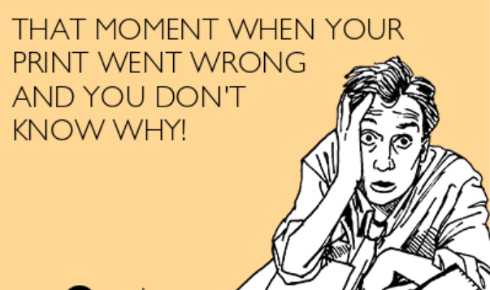

Intermediate Topics
Back To Homepage
What is an Intermediant?
ARRR WHAT BE AN INTERMIDATE??
Table of Contents
Hardware
A link example, can be put inside paragraphs of text.
Software
A link example, can be put inside paragraphs of text.
Theory
Holes
Overhangs
Threaded Inserts

Hahaha, this is so me! Use the figcaption to elaborate or make jokes about a photo, as well as to site the source.